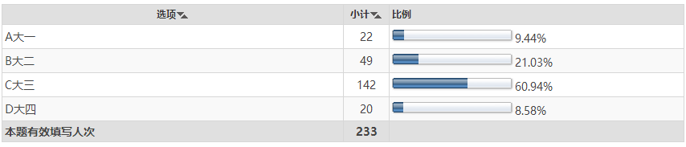

当代大学生就业的现状 问题 对策 调查
- A 大一 ( )
- B 大二 ( )
- C 大三 ( )
- D 大四 ( )

- 分析结果:
- 通过这次调查数据可以得出，由于大四很多都在外面实习，所以从表中可以看出，大四所占比例明显不多，在看大一，因为大一才刚刚进校一年，他们对自己就业问题可能还处于迷茫状态，接受调查的人也不多，对于大二，大三，大二的同学进过一年的磨练，渐渐明白就业问题，所以所在比例相对高一些，然而对于大三，仅仅只有几个月就开始实习，就要开始找工作，对于就业都很认真，都希望找到自己如意的工作，所以这次调查结果，大三对于就业问题效果比较好